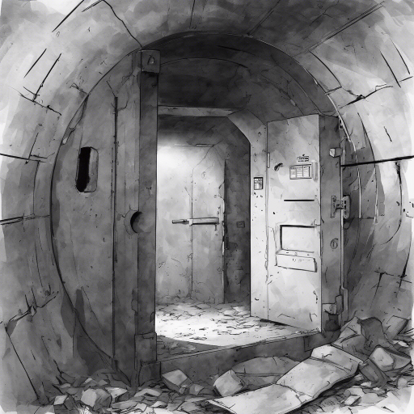

Körbejársz, és meglátsz egy másik lejáratot,megindult lefelé, amit leérsz megpillantasz egy félig nyitott ajtót, azon áthaladva egy zárt ajtót pillantasz meg. És hallod hogy valaki van odabent. Egy női hang suttog: „Segíts... bezártak…”

Ha kinyitod az ajtót.
Ha figyelmen kívül hagyod, és visszafordulsz.